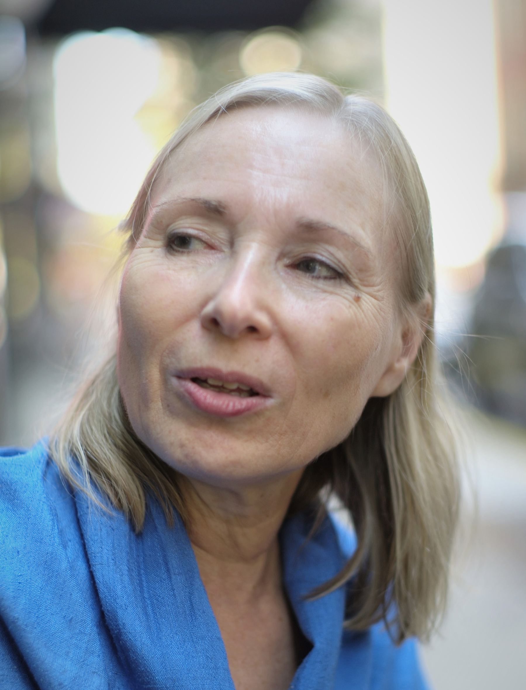

Visualising women in terraced agriculture
The Journal of Terraced Landscapes volume 1, issue 2, pp. 4–7 (2020) · Cite this article
- 214 views
- 147 downloads
- DOI10.5281/zenodo.8337103

Abstract
We are presenting this issue with four articles sharing the perception to convene a fruitful debate and conversations about the role of women in terraced landscapes. This theme poses the challenge to understand deeper how agricultural terraces integrate women as a creative force with visionary spirit of transformation and empowerment.
Keywords
- editorial
This issue of the Journal of Terraced Landscapes is dedicated to the memory of Heather Peters (1946 - 2021) who enlightened the beginning of this editorial endeavour and was abruptly interrupted by a fatal accident. The grief of your absence has not overshaded the inspiring moments of our fruitful conversations.
We are presenting this issue with four articles sharing the perception to convene a fruitful debate and conversations about the role of women in terraced landscapes. This theme poses the challenge to understand deeper how agricultural terraces integrate women as a creative force with visionary spirit of transformation and empowerment.
The authors, women scientists, disclose feminine perspectives in agricultural terracing as life-giving protagonists in generating and transmitting knowledge and practices rooted in specific cultures and territories. These contributions depart from own concepts of the rural women and their ways of seeing and interpreting their realities.
Three of the four articles (Camara, Ferreira, and Izquierdo and Romero) underline the systemic conditions of the economic models which drastically hide the driving force of women’s agricultural knowledge and practices behind agricultural production in different rural contexts. Each of these significant articles emphasizes a variety of situational cultural aspects, such as women’s ways of caring, knowing, preserving and increasing biodiversity in the terraced landscapes. Moreover, the powerful and nurturing message of women, striving to restore a social wellbeing in which food is no longer a commodity, is highlighted. These contributions are supported by qualitative methodologies that prioritize the perceptions, ideas, and the original voices of women in their own societies. They constitute original and unique constructions of reality from the point of view of the one-life-story, the elaboration of structured interviews, as well as the use of insightful archival photos to depict the different roles of women in a historical sequence.
The fourth article by Constanze Sixt is beyond the framework of the systemic conditions that affect rural women. It is a conceptually and methodological contribution of a fascinating level of abstraction that presents women from different historical and social realities related by the concept of tectonics.
Lianet Camara, PhD on Cultural Heritage, in her article Women in agriculture in the Andes: between critical issues and value deals with a critical balance of the structural loss of knowledge in different rural Andean communities in Peru. Particularly, she focuses on women whose multiple ways of organization --like associations, clubs, committees, and groups -- provide them a support basis to cope with issues related to the loss of knowledge. She identifies specific concerns of women regarding the transmission of knowledge and values for the preservation of biodiversity in the terraced landscapes and the rights to food sovereignty.
Liliana Ferreira, architect, presents: Marks on the land by the “little hands” - a testimony of life that is a tribute to rural women from the Madeira Island, Portugal, who besides their household activities and engagement in handicraft production, have contributed to shape the extreme deep slopes into intricate terraced gardens; humanized territories full of life histories. This article focuses on a 91-year-old woman whose life introduces us to her world of memories which are inevitable for the projection of the future of terraced landscapes. The author also presents a well sorted selection of archival photos that complement the narrative of one case life history.
Irma Izquierdo Suarez, anthropologist, and Lidia Esther Romero Martín, geographer: their article Rural women of La Gomera (Canary Islands, Spain): multi-active and custodians of traditional knowledge on an island of agricultural terraces tunes in the voices of eight women from different terraced landscapes in La Gomera, Canary Island, Spain. Each one tells her particular life story in a conversational modality triggered by open interviews. From the thorough content analysis of the life histories emerge several themes around family events, agricultural work in the terraces, and personal destinies. These are compiled by the authors in a flow of captions that introduces us to an insider and feminine perspective of agricultural life in the terraced landscapes.
Constanze Sixt, architect, offers an original perspective in her article Intertwining tectonics – the intercultural work of Anni Albers, she interweaves art, architecture, and terraced landscapes. These three themes are reflected by the author inspired in the work of the designer Annie Albers (Bauhaus), who sets the foundations of her theoretical approach to art encouraged by the geometric forms of Pre-Colombian art of textiles and stonewalling in Mexico and the Peruvian Andes.
The scientific articles share a special quality of treating women in a field of social tensions in which they are not only subjects of subordination but also capable to conquer and live with dignity. This personal awareness is polysemic in each case, full of contradictions, and not a simple triumphalist success story of empowerment.
Rights and permissions
Open Access. This article is licensed under a Creative Commons CC BY 4.0 license, which permits use, sharing, adaptation, distribution and reproduction in any medium or format, as long as you give appropriate credit to the original author(s) and the source and indicate if changes were made.
About this article
Cite this article
Salas, M., & Romero Martín, L. E. (2020). Visualising women in terraced agriculture. The Journal of Terraced Landscapes, 1(2), 4–7. https://doi.org/10.5281/zenodo.8337103
- Published
- December 2020
- Issue
- Volume 1, Number 2
- Journal
- The Journal of Terraced Landscapes, ISSN 2754-7612 (Online)
- Archive
- Zenodo record 8337103
- editorial